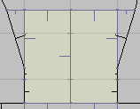

About ZDBSP
ZDBSP is a stand-alone version of ZDoom's internal node builder. This node
builder was written with two design goals in mind:
-
It must be fast. The original node builder was just going to be used to fix map
errors in ZDoom. After adding GL nodes support, ZDoomGL also started using it
as a preprocessing step for any maps without existing GL nodes. In both
cases, the node builder needed to be quick in order to minimize the
time the user was forced to wait before playing a map.
-
Polyobject bleeding must be minimized. The node builder was tested with the
standard Hexen maps and several user maps, and it has been able to prevent
bleeding on all properly-formed maps. (Note that it is impossible to prevent
polyobject bleeding in all circumstances. See the polyobjects section below for
rules you should follow for best results.)
License
This program is free software; you can redistribute it and/or modify it under
the terms of the GNU General Public
License as published by the Free Software Foundation; either version 2
of the License, or (at your option) any later version.
This program is distributed in the hope that it will be useful, but WITHOUT ANY
WARRANTY; without even the implied warranty of MERCHANTABILITY or FITNESS FOR A
PARTICULAR PURPOSE. See the GNU General Public License for more details.
You can also find a copy of the license as the file COPYING in the source
distribution.
Using ZDBSP with WadAuthor
First, copy zdbsp.exe to your WadAuthor directory. Then start WadAuthor and
choose "Options..." from its Tools menu. Select the "Files" tab and choose
"External" for Node Building. This activates the Command text box so that you
can type text into it. Copy and paste any of the following into it based on
what you want to do.
Create a map that can be played with Doom or any source port:
zdbsp -R -m$_Mapname $_Wadfile -o$_Wadfile
Create a map that will only be played with ZDoom. This will be
ZDoom-only because it creates a zero-length REJECT lump. ZDoom is smart enough
to know that a zero-length REJECT lump is the same thing as a REJECT lump
filled with zeros, so you can save space:
zdbsp -r -m$_Mapname $_Wadfile -o$_Wadfile
Create a map with both regular and GL nodes so that ZDoomGL does not
need to build GL nodes:
zdbsp -rg -m$_Mapname $_Wadfile -o$_Wadfile
ZDBSP command line options
ZDBSP supports several command line options to affect its behavior. If
you forget what they are, you can view a quick summary of them by running ZDBSP
without any options. They are also listed below in more detail than the listing
ZDBSP provides. Note that these options are case-sensitive, so -r is not the
same thing as -R. You can use either the long form of an option or the short
form depending on your preference.
- --help
-
Displays a summary of all ZDBSP's command line options, as if you had run ZDBSP
without any options.
- --version or -V
-
Displays ZDBSP's version number.
- --map=MAP or -mMAP
-
When you use this option, ZDBSP will only build the nodes for one map in a wad
instead of rebuilding the nodes for every map contained in the wad. MAP should
be the map's full name (e.g. MAP01 or E1M1)
- --output=FILE or -oFILE
-
Normally, ZDBSP creates a new wad named tmp.wad. You can use this option to
make it write to a different file instead. In the case of WadAuthor, this is
used to make ZDBSP overwrite the original file with the new one, because that
is what WadAuthor expects the nodebuilder to do.
- --no-prune or -q
-
When you use this option, ZDBSP will not remove unused sidedefs or sectors from
a map. ZDBSP will always remove 0-length linedefs from a map even when you use
this option because it is possible for them to make the game crash under
certain circumstances. Moreover, ZDoom will itself remove 0-length linedefs and
rebuild the nodes if it finds any.
- --no-nodes or -N
-
This option causes ZDBSP to take the node information from the old wad file and
write it to the new wad file. I can't think of any reason why you would want to
do this, but it is provided as an option nonetheless.
- --gl or -g
-
This option causes ZDBSP to build two sets of nodes for a map: One set of
regular nodes and one set of GL nodes. Because ZDBSP is doing twice the work,
it will take twice as long to finish.
- --gl-matching or -G
-
Like the previous option, this one will also make ZDBSP generate GL nodes.
However, it will only build one set of nodes and then strip the extra GL
information from them to create the normal nodes. Because of this, it is faster
than the previous option when you want to create GL nodes, but the normal nodes
will generally be less efficient because they were created from the GL nodes.
- --gl-v5 org -5
-
Always write GL nodes using the v5 GL node specification. Normally, v5 GL nodes
are only written if they exceed the limits of v2 GL nodes. Since v2 GL nodes are
more widely supported than v5 GL nodes and v5 GL nodes are only useful for very
large maps, you should generally not use this option. If you do not specify this
option, v5 GL nodes will still be automatically written if they are required, and
if they are not, the more space-efficient v2 GL nodes will be created instead.
- --compress or -z
- Compresses the node information. Compressed nodes take up less space than
uncompressed nodes, they are the only way to save nodes with more than 65535 segs, and
they also have higher vertex precision than normal nodes, reducing the possibility
of slime trails. If GL nodes are built, they will be compressed as well.
- --compress-normal or -Z
- This is exactly like the previous option, except GL nodes will not be compressed.
- --extended or -X
- Creates extended nodes. This is exactly like --compress, except the resultant nodes
are uncompressed.
- --empty-blockmap or -b
-
This option writes a zero-length BLOCKMAP to the wad. As of this writing, ZDoom
is the only port that will detect this and build the BLOCKMAP itself.
- --empty-reject or -r
-
When this option is used, ZDBSP will write a zero-length REJECT to the wad. As
of this writing, ZDoom is the only port that supports this. A zero-length
REJECT is the same thing as a reject filled with zeros. Since ZDBSP does not
generate a REJECT table, and the usefulness of having a REJECT is questionable,
you should always use this option if you intend for the map to be played solely
with ZDoom.
- --zero-reject or -R
-
This option is similar to the previous one, except ZDBSP will actually write
out a full-sized REJECT lump filled with zeros. If you play with ZDoom, this is
just wasted space, but other ports and Doom itself require a full-sized REJECT
lump to work.
- --no-reject or -E
-
This option makes ZDBSP copy the REJECT lump from the old wad to the new wad
unchanged. However, if it detects that the old REJECT is the wrong size for the
number of sectors in the map, it will be removed as if you had used the
--empty-reject option.
- --no-polyobjs or -P
-
This option disables ZDBSP's polyobject detection code. If you are building
nodes for a map without polyobjects, you might be able to save a fraction of a
second from the build time by using this option, but there is generally no
reason to use it.
- --no-timing or -t
-
If you don't care how long it takes to build nodes, use this option and ZDBSP
won't tell you.
- --no-sse
- Disables all SSE optimizations in the nodebuilder, which can be useful if you just
want to measure the kind of speed up SSE or SSE2 provides.
- --no-sse2
- Disables all SSE2 optimizations in the nodebuilder. SSE1 will still be used if
your processor supports it. Unless you want to compare the speed difference
between SSE and SSE2, there is again little reason to use this option.
- --warn or -w
-
Displays extra warning messages that ZDBSP might generate while building GL
nodes. The nodes will still be usable if warnings occur, and warnings are not
unlikely. If you have strange display problems with GL nodes, turning on the
warning messages may help you locate the problem.
- --partition=NNN or -pNNN
-
This option controls the maximum number of segs that will be considered for
splitters at each node. The default is 64. By increasing it, you might be able
to generate "better" nodes, but you get diminishing returns the higher you make
it. High values are also slower than low ones.
- --split-cost=NNN or -sNNN
-
This option adjusts how hard ZDBSP tries to avoid splitting segs. The default
value is 8. By increasing this, ZDBSP will try harder to avoid splitting segs.
If you decrease it, ZDBSP will split segs more frequently. More splits mean the
BSP tree will usually be more balanced, but it will also take up more room.
- --diagonal-cost=NNN or -dNNN
-
This option controls how hard ZDBSP tries to avoid using diagonal splitters.
The default value is 16. A higher value means that diagonal splitters will be
more likely to be used. This can sometimes help to reduce the number of segs in
a map. The reason avoiding diagonal splitters is important is because normal
nodes do not store any fractional information for the vertices that segs use,
so you are more likely to see slime trails with diagonal splitters than with
horizontal or vertical splitters.
- --view or -v
-
Under Windows, this displays a viewer that will let you inspect a map's
subsectors, nodes, and REJECT. To scroll the map around, drag it with your
right mouse button. The viewer was created to assist with debugging with the GL
nodes. It is not very user-friendly nor is it bug-free. In fact, if you try to
build nodes for more than one map with this option, there is a good chance
ZDBSP will crash.
Polyobjects
One of ZDBSP's most important features is that it tries very hard to avoid
polyobject bleeding. To make this feature work, however, you must design your
maps properly. You do this be ensuring that your polyobjects are always shown
inside a convex sector. This is referring to the area where the
polyobjects appear in the game, not where they appear in an editor. If you do
not know what convex means, think of triangles, squares and circles. They are
all convex. If you have a sector shaped like the letter C, that is not convex.
Ironically, an example of what not to do is in Hexen's MAP01. The
polyobject doors at the very start of that map do not appear in a convex area.
ZDBSP has been tuned so that they will display properly with the default
options, but you should not count on this for your own maps.
If ZDBSP has to split a linedef around a polyobject's display area, it will
print a message indicating where this happened so that you can inspect the area
and fix it. For example, when you use ZDBSP on hexen.wad, it outputs these
warnings for MAP01:
Split seg 929 (-1176,1312)-(-1088,1312) of sector 265 on line 572
Split seg 931 (-1088,1312)-(-1000,1312) of sector 265 on line 573
The important pieces of information here are the coordinates of the segs that
were split and the lines those segs were made from. In this case, both lines
572 and 573 were split. Because they surround a polyobject's display area,
ideally they should not be split, so you need to look at the map in an editor
to determine what made them split. This happens because the area is not convex,
so you need to look for a line in the same "loop" that, if you made it longer,
could cross the line that was split. In this example, lines 575 and 579 are
responsible for splitting line 572, and lines 576 and 578 are responsible for
splitting line 573. You can fix the error by reworking the area so that it is
convex, either by moving lines 575, 579, 576, and 578, or by adding additional
lines to separate each half into four convex pieces.
Below are some illustrations. The areas where the two polyobjects appear have
been highlighted.
This first image shows the area as it appears in hexen.wad,
unmodified. Note that neither side is convex, so ZDBSP will need to split each
side into two subsectors. The extra subsectors have been highlighted in a
brighter color to illustrate how ZDBSP splits them.

In the next image, the lines have been moved to make each side
convex.

In the final image, new two-sided lines have been added to make
each polyobject's display area rectangular. Unlike the line-moving method
above, this does not alter the area's appearance. Notice that this looks a lot
like the way ZDBSP split them in the first image. The difference is that by
adding the extra lines yourself, you have control over how the split is done
and ZDBSP does not need to guess about the best way to make the area convex.

Unfortunately, if you use WadAuthor, ZDBSP's output window will not normally
appear long enough for you to actually read it. You can get around this by
adding the -v option to the zdbsp command line that WadAuthor uses (see the
Using ZDBSP with WadAuthor section). Then its output will stay around until you
close the ZDBSP viewer.
Compressed Nodes
The following information describes the format used to store compressed nodes.
If you are just a regular user, you can skip this section.
Compressed nodes contain all the same information as regular nodes but are
stored in a single lump and compressed as a zlib data stream. They also support
more than 65535 segs and vertices by storing them using four bytes instead of
two.
The first four bytes of the compressed nodes are a four-character (uncompressed)
signature. This can be either 'ZNOD' for regular nodes or 'ZGLN' for GL nodes.
If there are more than 65534 lines in the map, the signature 'ZGL2' is used
for GL nodes instead. (Note that this can only happen with UDMF maps, because
the binary map format does not allow more lines than that.) There is also a third
variant of 'ZGLN': 'ZGL3' is identical to 'ZGL2' but expands the node's splitter
field to fixed point coordinates.
Following the signature is the zlib data stream. For a description of its
format, see the zlib documentation. When you decompress it, the following
information is obtained in this order:
-
Vertex information
-
Subsector information
-
Segs information
-
Nodes information
Types
The following sections use these types:
- BYTE
- A single unsigned byte. The number can be in the range [0,
255].
- WORD
- An unsigned integer stored in two bytes. The number can be
in the range [0, 65535].
- SWORD
- A signed integer stored in two bytes. The number can be
in the range [-32768, 32767].
- DWORD
- An unsigned integer stored in four bytes. The number can
be in the range [0, 4294967295].
- FIXED
- A signed 16.16 fixed-point number stored in four bytes. The
most-significant two bytes store the integer part of the number, and the
least-significant two bytes store the fractional part of the number. The number can
be in the approximate range [-32768.99998, 32767.99998].
All multi-byte numbers are stored with their least significant byte first (i.e.
little-endian).
Vertex information
| DWORD |
OrgVerts |
Number of vertices used from the VERTEXES lump |
| DWORD |
NewVerts |
Number of additional vertices that follow |
| Repeat NewVerts times: |
| FIXED |
X |
X-Coordinate |
| FIXED |
Y |
Y-Coordinate |
These are all the additional vertices that the segs use. Unlike normal
nodes, extra vertices are not added to the VERTEXES lump. When determining
which vertex v a seg uses, if v < OrgVerts, then v is
a vertex in the VERTEXES lump. Otherwise, when v >= OrgVerts, v
- OrgVerts is the index of a vertex stored here.
Like version 2 GL nodes, the vertices stored here are represented as 16.16 fixed
point numbers in order to maintain the full precision of the Doom engine.
Subsector information
| DWORD |
NumSubsectors |
Number of subsectors |
| Repeat NumSubsectors times: |
| DWORD |
NumSegs |
Number of segs for this subsector |
Unlike normal nodes, the first seg in each subsector is not stored. This can be
inferred by the ordering of the subsectors. The first subsector always starts
at seg 0, and each following subsector begins with the seg immediately after
the previous subsector's last seg.
Segs information
The specific layout for this section depends on whether the data stream
represents normal nodes or GL nodes. In each case, the segs are stored in an 11
byte structure, but their contents differ slightly. There is no padding to make
these align to DWORD boundaries.
Normal nodes ('ZNOD' signature)
| DWORD |
NumSegs |
Number of segs |
| Repeat NumSegs times: |
| DWORD |
v1 |
Seg's first vertex |
| DWORD |
v2 |
Seg's second vertex |
| WORD |
line |
The linedef this seg came from |
| BYTE |
side |
The linedef's side this seg came from (0=front, 1=back) |
Note that unlike uncompressed nodes, the seg's angle and offset are not
included. ZDoom does not need this information, and other ports that wish to
support compressed nodes can recompute them trivially.
GL nodes ('ZGLN' signature)
| DWORD |
NumSegs |
Number of segs |
| Repeat NumSegs times: |
| DWORD |
v1 |
Seg's first vertex |
| DWORD |
partner |
Seg's partner seg (0xFFFFFFFF if none) |
| WORD |
line |
The linedef this seg came from (0xFFFF if none) |
| BYTE |
side |
The linedef's side this seg came from (0=front, 1=back) (ignored if no line) |
GL nodes ('ZGL2' and 'ZGL3' signature)
| DWORD |
NumSegs |
Number of segs |
| Repeat NumSegs times: |
| DWORD |
v1 |
Seg's first vertex |
| DWORD |
partner |
Seg's partner seg (0xFFFFFFFF if none) |
| DWORD |
line |
The linedef this seg came from (0xFFFFFFFF if none) |
| BYTE |
side |
The linedef's side this seg came from (0=front, 1=back) (ignored if no line) |
Unlike standard GL nodes, each seg's second vertex is not stored. This is
because GL subsectors must form a closed area. In other words, one seg's second
vertex is the same as the next seg's first vertex. The subsector information
contains everything you need to know to close each area and start a new one.
Example: Suppose you have not read any segs yet, and the first subsector has
four segs. Therefore, the second vertex for the first four segs can be
determined to be:
| Seg 0 |
Second vertex is Seg 1's first vertex |
| Seg 1 |
Second vertex is Seg 2's first vertex |
| Seg 2 |
Second vertex is Seg 3's first vertex |
| Seg 3 |
Second vertex is Seg 0's first vertex (because this is the last seg in the
subsector) |
So for each subsector, all but the last seg's second vertex will be the same as
the next seg's first vertex. The last seg's second vertex will be the same as
the first seg's first vertex.
Node information
Only 'ZGL3' nodes structure this differently from standard nodes.
All nodes formats except 'ZGL3'
| DWORD |
NumNodes |
Number of nodes |
| Repeat NumNodes times: |
| 4 SWORDs |
X, Y, dX, dY |
Splitter for this node |
| 4 SWORDs |
Top, Bottom, Left, Right |
Bounding box for Child0 |
| 4 SWORDs |
Top, Bottom, Left, Right |
Bounding box for Child1 |
| 2 DWORDs |
Child0, Child1 |
References to child nodes or subsectors |
Nodes with 'ZGL3' signature
| DWORD |
NumNodes |
Number of nodes |
| Repeat NumNodes times: |
| 4 FIXEDs |
X, Y, dX, dY |
Splitter for this node |
| 4 SWORDs |
Top, Bottom, Left, Right |
Bounding box for Child0 |
| 4 SWORDs |
Top, Bottom, Left, Right |
Bounding box for Child1 |
| 2 DWORDs |
Child0, Child1 |
References to child nodes or subsectors |
As with standard nodes, a child's high bit is set to indicate that it is a
subsector and cleared to indicate that it is another node. Just remember that
the child references are stored using four bytes each instead of two.
Compressed node storage
Normal nodes (signature 'ZNOD') are stored in a map's NODES lump. Bear in mind
that compressed nodes are contained entirely within a single lump rather than
in three separate lumps.
GL nodes (signature 'ZGLN') are stored in a map's SSECTORS lump. Unlike regular
GL nodes, no new lumps are created for compressed GL nodes.
The SEGS lump is left unused and should be written with a length of 0. I may
find some way to "hijack" this lump in the future, so programs that read
compressed nodes must not assume that if the SEGS lump is non-empty, then
compressed nodes are not used.
For UDMF maps, nodes a stored in the map's ZNODES lump. These will only be
'ZGLN' or 'ZGL2' format nodes. Non-GL nodes are not supported for UDMF.
Extended nodes
For the benefit of ports not wishing to support zlib decompression of nodes,
there are variants of the compressed node formats without compression. These
are referred to extended nodes, and differ only from their compressed counterparts
in that their contents are not compressed. They use a different signature to
distinguish them from compressed nodes:
- ZNOD -> XNOD
- ZGLN -> XGLN
- ZGL2 -> XGL2
- ZGL3 -> XGL3